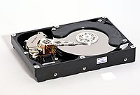
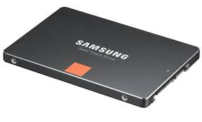

Ein Festplattenlaufwerk (englisch hard disk drive, Abkürzung HDD), oft auch als Festplatte oder Hard Disk (abgekürzt HD) bezeichnet, ist ein magnetisches Speichermedium der Computertechnik, bei welchem Daten auf die Oberfläche rotierender Scheiben (auch: „Platter“) geschrieben werden. Zum Schreiben wird die hartmagnetische Beschichtung der Scheibenoberfläche entsprechend der aufzuzeichnenden Information berührungslos magnetisiert. Durch die Remanenz (verbleibende Magnetisierung) erfolgt das Speichern der Information. Das Lesen der Information erfolgt durch berührungsloses Abtasten der Magnetisierung der Platteroberfläche.
 